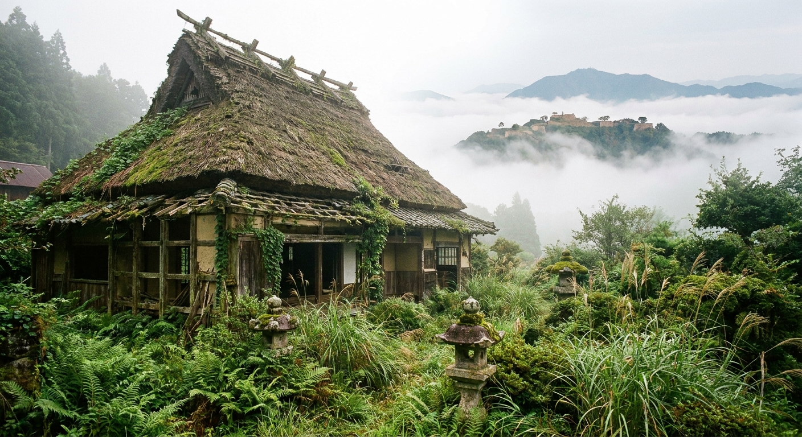
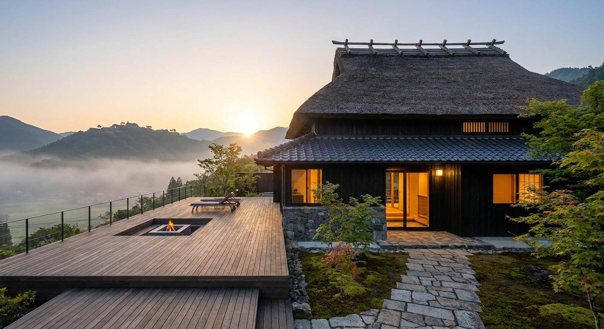
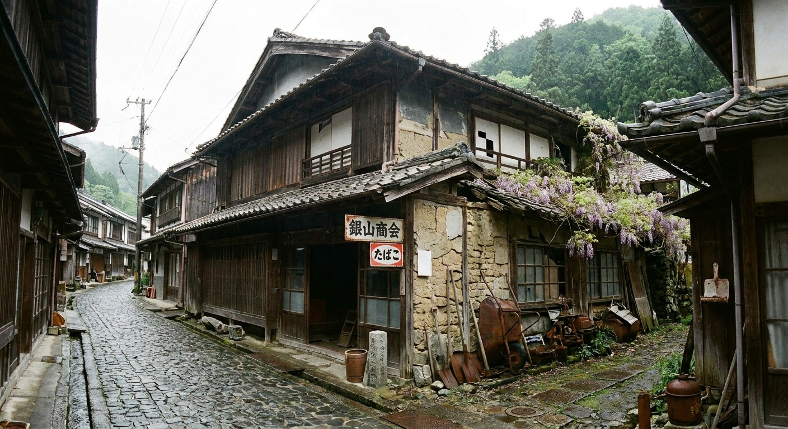
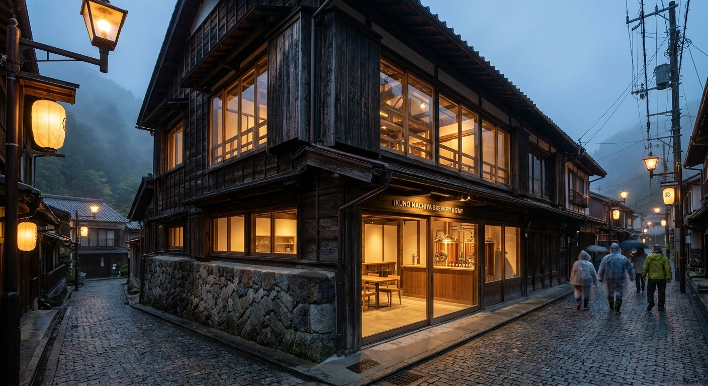
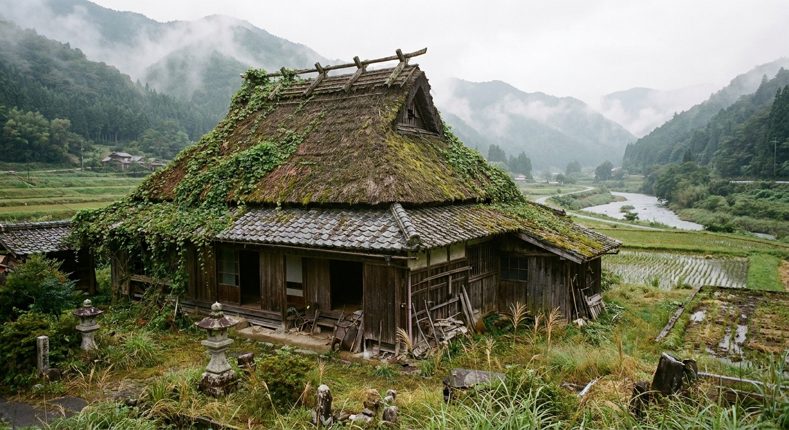
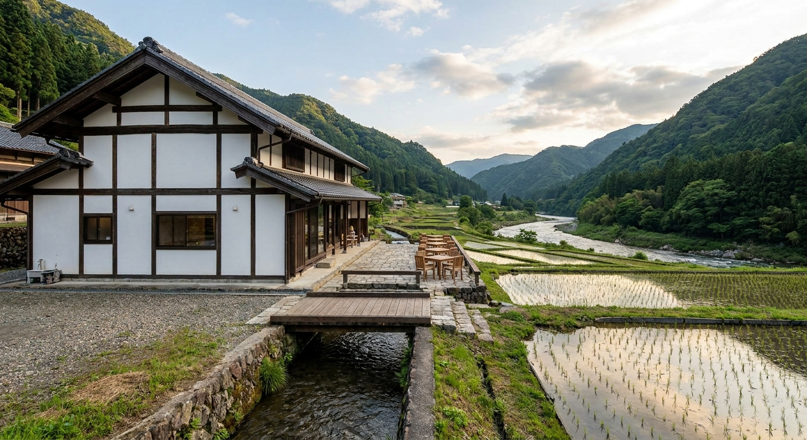
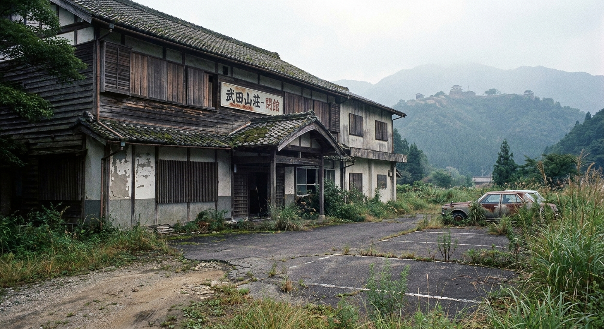
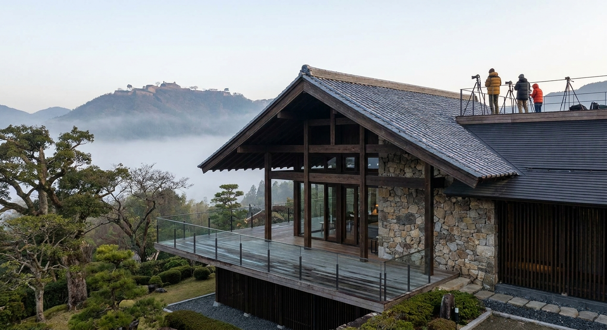

実際の物件 · 竹田城ビュー古民家
AI リノベーション後Score Overview · 全物件スコア
立地・単価ポテンシャル・初期投資効率・稼働率・差別化要素の5項目を各20点満点で評価。春秋の竹田城雲海シーズンが最高シーズン（稼働率75%）。

現状写真
AI リノベ後イメージ
現状写真
AI リノベ後イメージ
現状写真
AI リノベ後イメージ — 城郭クラフト旅館Comparison · 全物件比較
| 物件 | スコア | 取得価格 | 総投資 | 年間純利益 | 回収期間 |
|---|---|---|---|---|---|
| 竹田城ビュー 古民家 竹田地区 · 4LDK · 城址至近 |
86 | ¥700万 | ¥1,490〜1,890万 | ¥554万 | 4〜5年 |
| 生野銀山 街道町家 生野地区 · 3LDK+土間 · 銀山徒歩圏 |
78 | ¥300万 | ¥920〜1,250万 | ¥368万 | 5〜6年 |
| 円山川沿い 農村古民家 和田山エリア · 2LDK+納屋 |
71 | ¥200万 | ¥840〜1,210万 | ¥309万 | 4〜5年 |
| 竹田城址山麓 廃旅館 竹田地区 · 和室8室 · 大規模改修 |
74 | ¥100万 | ¥1,900〜3,100万 | ¥1,096万* | 7〜9年 |
*廃旅館は全室稼働時の試算。初年度は段階的立ち上げを推奨。
Airbnb ホストサービス料15%（ホスト全負担型）・清掃費・修繕積立を控除後の純利益。春秋の稼働率は竹田城雲海シーズン（10〜11月・3〜4月）を含む。実際の収益は市場環境・運営体制により異なります。
Area Info · 朝来エリア
「日本のマチュピチュ」として海外メディアに取り上げられた竹田城。兵庫の奥但馬に秘められた観光ポテンシャルと投資優位性。
Consultation · 無料相談
物件選定・リノベーション設計・Airbnb運用・SOLUNA SIPsパネル断熱施工まで一気通貫でサポート。春秋の雲海シーズンに間に合わせる逆算プランもご提案します。
ありがとうございます。
24時間以内にご連絡します。